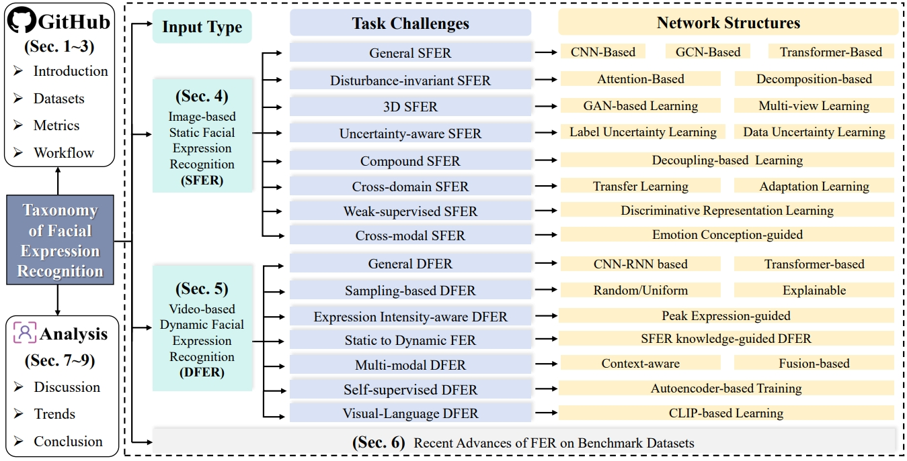
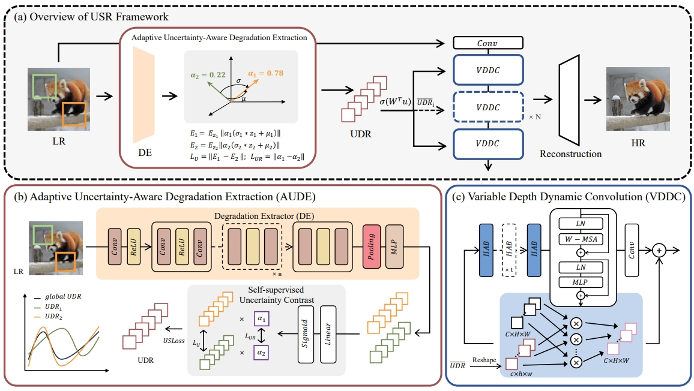
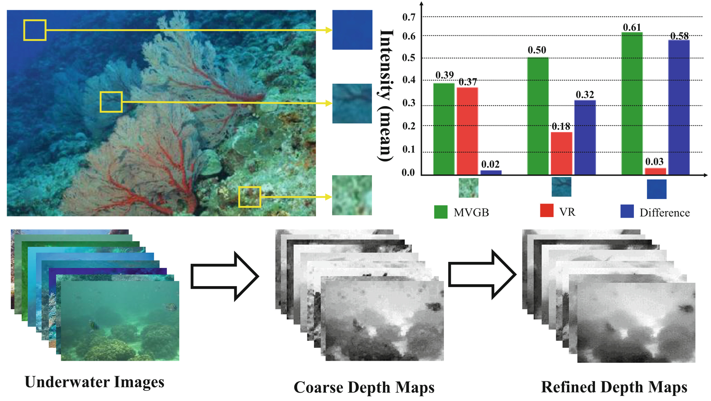

üìç Fudan University, China
üìßyanwang19 at fudan.edu.cn
üìßyanwang9310 at 163.com
[GitHub]
[DBLP]
[Google Scholar]
Welcome to Wang Yan (王龑)'s Homepage
2022/12 - Now, I am a Postdoctoral Fellow (Shanghai Super Postdoctoral Fellow) at the Institute of Intelligent Robotics, Fudan University. Supervisor: Prof. Wenqiang Zhang.
2019/09 - 2023/01, I was a Ph.D. student (China National Scholarship, Outstanding Graduate of Shanghai) in Academy for Engineering and Technology, Fudan University, China. Supervisor: Prof. Wenqiang Zhang.
2016/09 - 2019/07, I was a Master student (China National Scholarship, Outstanding Graduate of Shanghai) in College of Information Technology, Shanghai Ocean University, China. Supervisor: Prof. Wei Song.
Research Interests:
- Facial Expression Recognition and Affective Computing in Different Scenes. The purpose is to design AI models to perceive and understand human emotion from facial images, videos, text, voice or multi-modal information.
- Anomaly Detection in Industrial Environments. The purpose is to identify visual anomalies of equipment or products through image analysis, detect defects or failures.
- Image Restorationand and Enhancement, Super-resolution. The purpose is to develop algorithms to process an image so that result is more suitable than original image or video for specific application.
News and Olds
- [2024-12] One paper has been accepted by AAAI 2025
- [2024-11] Congratulations. "A systematic review on affective computing: emotion models, databases, and recent advances" was selected as Information Fusion 2024 Best Survey Award
- [2024-10] A Survey on RGB, 3D, and Multimodal Approaches for Unsupervised Industrial Anomaly Detection can be viewed from [Arxiv] [Github]
- [2024-09] One paper has been accepted by NeurIPS 2024
- [2024-08] A Survey on Facial Expression Recognition of Static and Dynamic Emotions can be viewed from [Arxiv] [Github]
- [2024-08] One paper has been accepted by Information Sciences
- [2024-07] Two papers ( One Oral ) have been accepted by ACMMM 2024
- [2024-17] One paper has been accepted by ECCV 2024
- [2024-04] One paper has been accepted by IJCAI 2024
- [2024-03] Two papers have been accepted by CVPR 2024
- [2024-02] We will release a Multi-Scene Unsupervised Anomaly Detection Dataset MSC-AD
- [2024-02] We will release the IndSR dataset
- [2024-01] One paper has been accepted by IEEE Trans. on Industrial Informatics (IF: 12.3)
- [2023-12] One paper has been accepted by AAAI 2024
- [2023-12] Two papers have been accepted by Computer Communications (IF: 6.0)
- [2023-11] One paper has been accepted by IEEE Trans. on Industrial Informatics (IF: 12.3)
- [2023-10] Three papers ( Best Paper Nomination ) has been accepted by INSAI 2023
- [2023-12] Five papers ( Two Oral Papers ) have been accepted by ACMMM 2023
- [2023-07] Two papers have been accepted by ICCV 2023
- [2023-03] One paper has been accepted by IEEE Trans. on CSVT (IF: 8.4)
- [2022-06] Two paper have been accepted by ACMMM 2022
- [2022-05] We release the FERV39k dataset
- [2022-03] One paper has been accepted by Information Fusion (IF: 18.6)
- [2022-02] One paper has been accepted by CVPR 2022
- [2021-11] One paper has been accepted by AAAI 2022
- [2020-09] One paper has been accepted by IEEE Trans. on Broadcasting
Preprints/Manuscripts [Google Scholar]
A Survey on Facial Expression Recognition of Static and Dynamic Emotions
arXiv preprint, 2024
Yan Wang,... , Wenqiang Zhang✉.
PDF| Project Page| Github
Hi-EF: Benchmarking for Human-interaction-based Emotion Forecasting
arXiv preprint, 2024
Haoran Wang, Xinji Mai, Zeng Tao, Yan Wang, Yan Wang✉, Jiawen Yu, Ziheng Zhou, Xuan Tong, Shaoqi Yan, Qing Zhao, Shuyong Gao, Wenqiang Zhang✉.
PDF| Project Page| Github
A3lign-DFER: Pioneering Comprehensive Dynamic Affective Alignment for Dynamic Facial Expression Recognition with CLIP
arXiv preprint, 2024
Zeng Tao, Yan Wang✉, Junxiong Lin, Haoran Wang, Xinji Mai,... , Wenqiang Zhang✉
PDF| Project Page| Github
Selected Publications (by reseach interest) [Google Scholar]
(✉ indicates corresponding author, and * indicates equal contribution)
Intelligent Emotional Robots
A Systematic Review on Affective Computing: Emotion Models, Databases, and Recent Advances
Information Fusion, 2022 [ESI Highly Cited Paper]
Yan Wang, Wei Song, Wei Tao, Dawei Yang, Antonio Liotta,Dawei Yang, Xinlei Li, Shuyong Gao, Yixuan Sun, Weifeng Ge, Wei Zhang, Wenqiang Zhang✉.
PDF| Project Page| Github

OUS: Bridging Scene Context and Facial Features to Overcome the Rigid Cognitive Problem
AAAI, 2025
Xinji Mai, Haoran Wang, Zeng Tao, Junxiong Lin, Shaoqi Yan, Yan Wang✉, Jiawen Yu, Xuan Tong, Yating Li, Wenqiang Zhang✉.
PDF Project Page Github
MGR3Net: Multi-Granularity Region Relation Representation Network for Facial Expression Recognition in Affective Robots
IEEE Trans. on Industrial Informatics, 2024
Yan Wang, Shaoqi Yan, Wei Song, Antonio Liotta, Jing Liu, Dingkang Yang, Shuyong Gao, Wenqiang Zhang✉.
PDF| Project Page| Github
LCGen: Mining in Low-Certainty Generation for View-consistent Text-to-3D
NeurIPS, 2024
Zeng Tao, Tong Yang, Junxiong Lin, Xinji Mai, Haoran Wang, Beining Wang, Enyu Zhou, Yan Wang✉, Wenqiang Zhang✉.
PDF| Project Page| Github
Observe Finer To Select Better: Learning Key Frame Extraction via Semantic Coherence for Dynamic Facial Expression Recognition in the Wild
Information Sciences, 2024
Shaoqi Yan, Yan Wang✉, Xinji Mai , Zeng Tao, Wei Song , Qing Zhao, Boyang Wang, Haoran Wang, Shuyong Gao, Wenqiang Zhang✉.
PDF| Project Page| Github
All rivers run into the sea: Unified Modality Brain-like Emotional Central Mechanism
ACM MM, 2024 [Oral]
Xinji Mai, Junxiong Lin, Haoran Wang, Zeng Tao, Yan Wang✉, Shaoqi Yan, Xuan Tong, Jiawen Yu, Boyang Wang, Ziheng Zhou, Qing Zhao, Shuyong Gao, Wenqiang Zhang.
PDF| Project Page| Github

Freq-HD: an Interpretable Frequency-based High-Dynamics Affective Clip Selection Method for in-the-Wild Facial Expression Recognition in Videos
ACM MM, 2023 [Oral]
Zeng Tao, Yan Wang✉, Zhaoyu Chen, Boyang Wang, Shaoqi Yan, Kaixun Jiang, Shuyong Gao, Wenqiang Zhang✉.
PDF| Project Page| Github
Towards Decision-based Sparse Attacks on Video Recognition
ACM MM, 2023 [Oral]
Kaixun Jiang, Zhaoyu Chen, Xinyu Zhou, Jingyu Zhang, Lingyi Hong, JiaFeng Wang, Bo Li, Yan Wang✉, Wenqiang Zhang✉.
PDF| Project Page| Github
Efficient Decision-based Black-box Patch Attacks on Video Recognition
ICCV, 2023
Kaixun Jiang, Zhaoyu Chen, Tony Huang, Jiafeng Wang, Dingkang Yang, Bo Li, Yan Wang✉, Wenqiang Zhang✉
PDF| Project Page| Github
Empower Smart Cities with Sampling-wise Dynamic Facial Expression Recognition via Frame-Sequence Contrastive Learning
INSAI 2023 --> Computer Communications, 2023
Shaoqi Yan, Yan Wang✉, Xinji Mai, Qing Zhao, Wei Song, Jun Huang, Zeng Tao, Haoran Wang, Shuyong Gao, Wenqiang Zhang✉.
PDF| Project Page| Github
FERV39k: A Large-Scale Multi-Scene Dataset for Facial Expression Recognition in Videos
CVPR, 2022 [Three Accept]
Yan Wang, Yixuan Sun, Yiwen Huang, Zhongying Liu, Shuyong Gao, Wei Zhang, Weifeng Ge✉, Wenqiang Zhang✉.
PDF| Project Page| Github
DPCNet: Dual Path Multi-Excitation Collaborative Network for Facial Expression Representation Learning in Videos
ACM MM, 2022
Yan Wang, Yixuan Sun, Wei Song, Shuyong Gao, Yiwen Huang, Zhaoyu Chen, Weifeng Ge✉, Wenqiang Zhang✉.
PDF| Project Page| Github
A User-Friendly Framework for Generating Model-Preferred Prompts in Text-to-Image
AAAI, 2024
Nailei Hei, Qianyu Guo, Zihao Wang, Yan Wang✉, Haofen Wang✉, Wenqiang Zhang✉.
PDF| Project Page| Github
Machine Vision and Enhancement
MSC-AD: A Multi-Scene Unsupervised Anomaly Detection Dataset for Small Defect Detection of Casting Surface
IEEE Trans. on Industrial Informatics, 2023
Qing Zhao, Yan Wang✉, Boyang Wang, Junxiong Lin, Shaoqi Yan, Wei Song, Antonio Liotta, Jiawen Yu, Shuyong Gao, Wenqiang Zhang✉.
PDF| Project Page| Github
Adaptive Multi-modal Fusion of Spatially Variant Kernel Refinement with Diffusion Model for Blind Image Super-Resolution
ECCV, 2024
Junxiong Lin, Yan Wang✉, Zeng Tao, Boyang Wang, Qing Zhao, Haorang Wang, Xuan Tong, Xinji Mai, Yuxuan Lin, ..., Wenqiang Zhang.
PDF| Project Page| Github
Suppressing Uncertainties in Degradation Estimation for Blind Super-Resolution
ACM MM, 2024
Junxiong Lin, Zeng Tao, Xuan Tong, Xinji Mai, Haoran Wang, Boyang Wang, Yan Wang✉, Qing Zhao, Jiawen Yu, Yuxuan Lin, Shaoqi Yan, Shuyong Gao, Wenqiang Zhang✉.
PDF| Project Page| Github
FD-UAD: Unsupervised Anomaly Detection Platform Based on Defect Autonomous Imaging and Enhancement
IJCAI, 2024
Yang Chang, Yuxuan Lin, Boyang Wang, Qing Zhao, Yan Wang✉, Wenqiang Zhang✉.
PDF| Project Page| Github
A Capture to Registration Framework for Realistic Image Super-Resolution in the Industry Environment
ACM MM, 2023
Boyang Wang, Yan Wang✉, Qing Zhao, Junxiong Lin, Zeng Tao, Pinxue Guo, Zhaoyu Chen, Kaixun Jiang, Shaoqi Yan, Shuyong Gao, Wenqiang Zhang✉
PDF| Project Page| Github
Mixed Noise-Guided Mutual Constraint Framework for Unsupervised Anomaly Detection in Smart Industries
INSAI 2023 --> Computer Communications, 2023
Qing Zhao, Yan Wang✉,Yuxuan Lin, Shaoqi Yan, Wei Song, Boyang Wang, Jun Huang, Yang Chang, Lizhe Qi✉, Wenqiang Zhang✉.
PDF| Project Page| Github
Enhancement of Underwater Images with Statistical Model of Background Light and Optimization of Transmission Map
IEEE Trans. on Broadcasting, 2020 [ESI Highly Cited Paper]
Wei Song, Yan Wang✉, Dongmei Huang✉, Antonio Liotta, Cristian Perra.
PDF| Project Page| Github

An Experimental-based Review of Image Enhancement and Image Restoration Methods for Underwater Imaging
IEEE, 2019
Yan Wang, Wei Song✉, Giancarlo Fortino, Lizhe Qi, Wenqiang Zhang, Antonio Liotta.
PDF| Project Page| Github
A Rapid Scene Depth Estimation Model Based on Underwater Light Attenuation Prior for Underwater Image Restoration
PCM, 2018 [3 Accept, Oral]
Wei Song*, Yan Wang*, Dongmei Huang, Dian Tjondronegoro.
PDF| Project Page Github
Honors & Awards:
- In 2023, Outstanding graduate of Shanghai
- In 2022, National Scholarship for Graduate Students
- In 2021, first-class scholarship in Fudan University
- In 2020, Dong Scholarship in Fudan University
- In 2020, Outstanding Graduate student of Postgraduate backbone in Fudan University
- In 2020, Excellent graduation thesis of Shanghai Ocean University
- One paper is recognized as Featured article in IEEE.
- In 2019, Alumni Liaison Ambassador of Shanghai Ocean University
- In 2019, Outstanding graduate of Shanghai
- In 2018, National Scholarship for Graduate Students
Professional Service:
- Program Committee Member/Reviewer
- CVPR: 2021, 2022, 2023, 2024
- ICCV: 2021, 2023
- ECCV: 2022, 2024
- AAAI: 2022, 2023, 2024, 2025
- ACM MM: 2022, 2023, 2024
- Journal Reviewer
- IEEE Transactions on Pattern Analysis and Machine Intelligence (TPAMI)
- International Journal of Computer Vision (IJCV)
- IEEE Transactions on Image Processing (TIP)
- IEEE Transactions on Industrial Informatics (TII)
- IEEE Transactions on Neural Networks and Learning Systems (TNNLS)
- IEEE Transactions on Multimedia (TMM)
- IEEE Transactions on Broadcasting (TBC)
- Pattern Recognition
- Knowledge-Based Systems